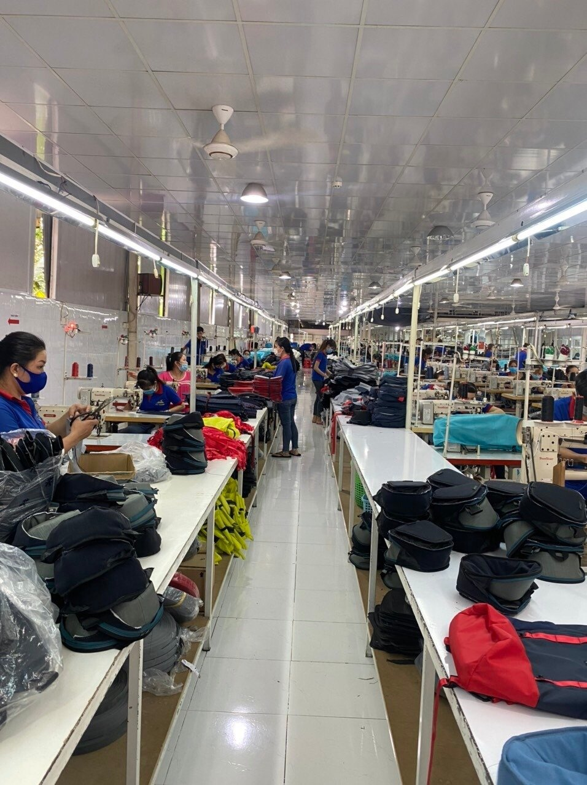

ABOUT
HISTORY
GUESS was established in 1981 by the Marciano brothers, who left the south of France in pursuit of the American dream. Inspired by a European influence, the Marcianos redefined denim. One of their initial designs was a stonewashed, slim-fitting jean, the 3-zip Marilyn.
COMPANY'S VALUES
QUALITY PRIORIIZING -The quality and design of their bags can vary depending on the specific product, so it's difficult to say which brand is definitively "better."
TRANSPARENCY-Vintage Guess Transparent Bag Set. Condition: pre worn item in very good condition. Measurements: 43x30x9.5cm.
SUSTAINABLE PRACTICES-Sustainable bags are eco-friendly creations, crafted to have a minimal footprint on the environment.
MISSION
At Guess, We Are Commited To Being A Worldwide Leader In The Fashion Industry. We deliver products and services of uncompromising quality and integrity consistent with our brand and our image.
VISSION
No one has added GUESS' vision statement yet.
PHOTO OF THE COMPANY AND STAFF

back